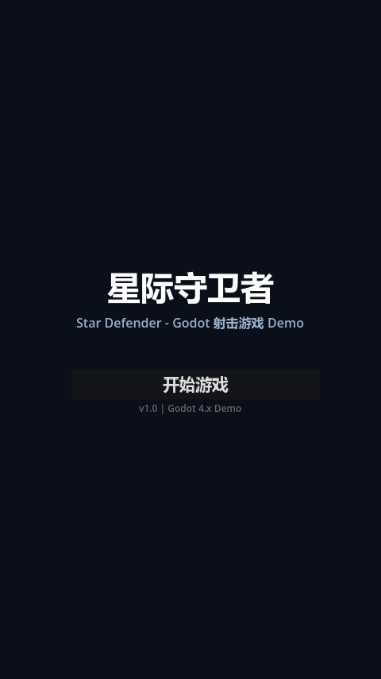

从验证引擎能力出发，选择经典品类作为技术试验田，在可控复杂度内覆盖 Godot 核心特性。
经典竖版射击（Shoot 'em up）规则明确、反馈即时，非常适合验证 Godot 的 2D 物理、输入系统、碰撞检测与粒子特效。无需复杂寻路或状态机即可做出"好玩"的原型。
玩家移动 → 自动射击 → 消灭敌人 → 积累分数 → 抵御波次 → 升级难度。循环周期控制在 10–30 秒，确保每波都有明显的难度递进与视觉变化。
① 验证 Godot 4.x 节点场景工作流；② 实践 GDScript 2.0 类型系统与信号模式；③ 建立可复用的敌人基类（继承）+ 数据驱动波次系统；④ 验证 AI 辅助生成游戏代码的可行性。

本项目将 AI 定位为"结对编程伙伴"——由人定义架构与接口，AI 生成具体实现与重复样板。所有代码均经过人工审阅、测试与调参，确保符合 Godot 最佳实践。
| 敌人 | 外观 | 血量 | 分值 | AI 行为 |
|---|---|---|---|---|
| 基础敌人 | 红色三角 | 1 | 100 | 正弦摆动 + 下降，会射击（间隔 3s） |
| 快速敌人 | 黄色菱形 | 1 | 200 | 高速追踪玩家 X 轴，不射击 |
| 坦克敌人 | 绿色方块 | 5 | 500 | 慢速直线，3 连发散弹（间隔 2.5s） |
玩家：移动速度 350，自动射击间隔 0.15s，初始 / 重生后 2s 无敌。
< 2000 继续加油 · ≥ 2000 优秀飞行员 · ≥ 5000 王牌飞行员 · ≥ 10000 传奇飞行员。通关 10 波后会进入更高强度的循环，分数可持续累加。
场景树关系、信号通信流与碰撞分层设计——理解 Godot"节点即对象"的核心理念。
主场景 main.tscn 的真实节点树。Main 作为"导演"协调各子系统；玩家与敌人在运行时动态实例化，并非预先摆在场景里：
各子系统通过信号解耦。GameManager 作为 AutoLoad 信号总线居中转发，HUD 只认识 GameManager、并不直接耦合 WaveManager：
Godot 的信号系统实现了发布-订阅模式。例如 WaveManager 每消灭一个敌人，会通过 GameManager.enemy_count_changed 把"剩余敌人数"广播出去——它并不知道 HUD 的存在，HUD 也只订阅 GameManager。这样 WaveManager 与 HUD 完全解耦，新增任何"剩余敌人"的消费者都无需改动生产者代码。
project.godot 定义了 5 个物理层（位号 → 名称）：1=玩家、2=敌人、3=玩家子弹、4=敌人子弹、5=场景边界。各节点据此设置 collision_layer（我属于谁）与 collision_mask（我检测谁）：
| 节点 | collision_layer（所属层） | collision_mask（检测谁） |
|---|---|---|
Player 机体 + HurtBox |
1（玩家） | HurtBox mask=10 → 检测 2(敌人) + 4(敌人子弹) |
敌人 enemy_basic/fast/tank |
2（敌人） | mask=5 → 检测 1(玩家) + 3(玩家子弹) |
player_bullet 玩家子弹 |
3（玩家子弹，bit3 / 值 4） | 检测 2(敌人) |
enemy_bullet 敌人子弹 |
4（敌人子弹，bit4 / 值 8） | 检测 1(玩家) |
DeadZone 边界回收 |
5（场景边界） | 检测子弹 / 敌人越界 |
Layer 定义"我属于哪个组"，Mask 定义"我想检测哪些组"。Area A 能检测到 B 的条件是 A 的 mask 包含 B 的 layer——单向即可触发 area_entered / body_entered，并不要求双方互含。例如玩家子弹 mask 含"敌人"层，子弹一进入敌人区域即触发回调，敌人无需反向检测子弹。
玩家是否受伤只由 Player 的 HurtBox 单独裁决（它检查无敌帧 _is_invincible）。敌人子弹命中玩家时只负责自毁、不自己扣血——保证伤害只有一个权威来源，避免无敌帧被绕过、以及一次碰撞被扣两次血。所有碰撞信号统一在脚本 _ready() 里 connect，不在 .tscn 里连，避免双重连接。
四个核心脚本展示 Godot 4.x 的最佳实践：单例状态、数据驱动、AI 行为与碰撞架构。
# 全局游戏管理器 (AutoLoad 单例) # 负责: 游戏状态管理、分数统计、生命值、信号总线 extends Node # ========== 信号 ========== signal score_changed(new_score: int) signal health_changed(new_health: int) signal wave_changed(new_wave: int) signal enemy_count_changed(remaining: int) signal game_started signal game_over(final_score: int) signal game_paused signal game_resumed # ========== 游戏状态枚举 ========== enum GameState { MENU, PLAYING, PAUSED, GAME_OVER } # ========== 常量 ========== const MAX_HEALTH: int = 3 const INITIAL_SCORE: int = 0 const INITIAL_WAVE: int = 1 # ========== 状态变量（内联 setter：变更即发信号）========== var current_state: GameState = GameState.MENU var score: int = INITIAL_SCORE: set(value): score = value score_changed.emit(score) var health: int = MAX_HEALTH: set(value): health = clampi(value, 0, MAX_HEALTH) health_changed.emit(health) if health <= 0 and current_state == GameState.PLAYING: _trigger_game_over() var current_wave: int = INITIAL_WAVE: set(value): current_wave = value wave_changed.emit(current_wave) # ========== 公共方法 ========== ## 开始新游戏 func start_game() -> void: score = INITIAL_SCORE health = MAX_HEALTH current_wave = INITIAL_WAVE current_state = GameState.PLAYING game_started.emit() func add_score(points: int) -> void: score += points func player_take_damage(damage: int = 1) -> void: health -= damage # ========== 私有方法 ========== func _trigger_game_over() -> void: current_state = GameState.GAME_OVER game_over.emit(score)
GameManager 在 project.godot 中注册为 AutoLoad，任何场景都能直接访问。score / health / current_wave 都用内联 setter：赋值时自动 emit 对应信号，调用方只管改值、无需手动通知 UI。health 的 setter 还会在血量归零且处于 PLAYING 时直接触发 game over——状态收口在一处。
# 波次管理器 # 负责: 程序化生成敌人波次，难度递增，关卡设计 extends Node # ========== 信号 ========== signal wave_started(wave_number: int) signal wave_completed(wave_number: int) signal enemy_spawned(enemy: Node2D) signal all_waves_cleared # ========== 预加载 ========== const ENEMY_SCENES: Dictionary = { "basic": preload("res://scenes/enemy_basic.tscn"), "fast": preload("res://scenes/enemy_fast.tscn"), "tank": preload("res://scenes/enemy_tank.tscn") } # ========== 波次配置（数据驱动）========== # 每波: { enemies:[{type,count}...], spawn_interval, pattern } const WAVE_CONFIGS: Array[Dictionary] = [ {"enemies": [{"type": "basic", "count": 5}], "spawn_interval": 1.5, "pattern": "line"}, {"enemies": [{"type": "basic", "count": 4}, {"type": "fast", "count": 2}], "spawn_interval": 1.2, "pattern": "mixed"}, {"enemies": [{"type": "basic", "count": 10}], "spawn_interval": 0.8, "pattern": "rush"}, # …第 4~9 波省略，按 type/count 混合并逐波加密… {"enemies": [{"type": "tank", "count": 3}, {"type": "fast", "count": 10}, {"type": "basic", "count": 10}], "spawn_interval": 0.6, "pattern": "boss_support"} ] # ========== 状态变量 ========== var _current_wave_index: int = 0 # 剩余敌人数：setter 内经 GameManager 信号总线广播给 HUD，避免直接耦合 var _enemies_remaining: int = 0: set(value): _enemies_remaining = value GameManager.enemy_count_changed.emit(value) var _spawn_queue: Array[Dictionary] = [] var _spawn_timer: float = 0.0 var _is_spawning: bool = false var _intensity_multiplier: float = 1.0 func start_waves() -> void: _current_wave_index = 0 _intensity_multiplier = 1.0 _start_wave(_current_wave_index) func start_next_wave() -> void: _current_wave_index += 1 if _current_wave_index >= WAVE_CONFIGS.size(): all_waves_cleared.emit() return _start_wave(_current_wave_index) # 通关后再来一轮，每轮整体加难 func reset_and_intensify() -> void: _intensity_multiplier += 0.3 _current_wave_index = 0 _start_wave(0) func _start_wave(index: int) -> void: var config: Dictionary = WAVE_CONFIGS[index] _spawn_queue.clear() for entry in config["enemies"]: for i in range(entry["count"]): _spawn_queue.append({"type": entry["type"]}) _spawn_queue.shuffle() # 打乱生成顺序，避免模式化 _enemies_remaining = _spawn_queue.size() _spawn_timer = 1.0 _is_spawning = true wave_started.emit(GameManager.current_wave) # 基于 float 计时累减，到点生成下一个；强度乘数缩短间隔 func _physics_process(delta: float) -> void: if not _is_spawning: return _spawn_timer -= delta if _spawn_timer <= 0 and _spawn_queue.size() > 0: _spawn_next_enemy() var base_interval: float = WAVE_CONFIGS[_current_wave_index]["spawn_interval"] _spawn_timer = base_interval / _intensity_multiplier if _enemies_remaining <= 0 and _spawn_queue.size() == 0: _is_spawning = false wave_completed.emit(GameManager.current_wave) func _spawn_next_enemy() -> void: if _spawn_queue.size() == 0: return var entry: Dictionary = _spawn_queue.pop_front() var enemy_type: String = entry["type"] var enemy := ENEMY_SCENES[enemy_type].instantiate() as Node2D enemy.global_position = _get_spawn_position() if enemy is EnemyBase: # 难度缩放 enemy.speed *= _intensity_multiplier enemy.score_value = int(enemy.score_value * _intensity_multiplier) enemy.died.connect(_on_enemy_died) (get_tree().current_scene.get_node("EnemyContainer") as Node2D).add_child(enemy) enemy_spawned.emit(enemy) func _get_spawn_position() -> Vector2: # 用视口可见区域尺寸（拉伸后逻辑坐标 480×854），随机 X，从屏幕上方进入 var viewport_size := get_viewport().get_visible_rect().size var x := randf_range(40.0, viewport_size.x - 40.0) return Vector2(x, -30.0) func _on_enemy_died(_pos: Vector2, _score: int) -> void: _enemies_remaining -= 1
10 波配置全在 WAVE_CONFIGS 常量里（每项含敌人组合、生成间隔、节奏标签），_physics_process 用一个 float 计时器累减触发生成，调难度只改数据、不改逻辑。敌人在屏幕上方随机 X 进入（没有 Path2D / PathFollow2D），并按 _intensity_multiplier 缩放速度与分值；通关后 reset_and_intensify() 提高乘数循环增难。
# ───── enemy_base.gd（基类，节选）：定义"敌人"这一类型与通用行为 ───── extends Area2D class_name EnemyBase signal died(position: Vector2, score_value: int) @export var max_health: int = 1 @export var speed: float = 100.0 @export var score_value: int = 100 @export var can_shoot: bool = false var _move_direction: Vector2 = Vector2.DOWN func _physics_process(delta: float) -> void: _update_ai(delta) # 由子类覆盖，决定移动方向 position += _move_direction * speed * delta # …射击 / 出界检测略… # 默认 AI：直线向下。子类覆盖此方法做差异化行为 func _update_ai(_delta: float) -> void: _move_direction = Vector2.DOWN func take_damage(amount: int = 1) -> void: _current_health -= amount _flash_white() if _current_health <= 0: _die() # 加分 + 爆炸 + 震动 + emit died() # ───── enemy_fast.gd（子类）：黄色菱形，追踪玩家 X，不射击 ───── extends EnemyBase var _player: Node2D = null # 在 _ready 里覆盖基类导出的数值，再调 super._ready() func _ready() -> void: max_health = 1 speed = 220.0 score_value = 200 can_shoot = false super._ready() _player = _find_player() # 覆盖 AI：朝玩家 X 缓慢偏移（clampf 限幅，避免"瞬移"锁定） func _update_ai(_delta: float) -> void: var target_x := global_position.x if _player != null and is_instance_valid(_player): target_x = _player.global_position.x var diff_x := target_x - global_position.x var move_x := clampf(diff_x * 0.02, -0.8, 0.8) _move_direction = Vector2(move_x, 1.0).normalized() func _find_player() -> Node2D: var main := get_tree().current_scene for child in main.get_children(): if child.is_in_group("player"): return child return null
EnemyBase（class_name 注册全局类型）封装移动/受伤/死亡/加分等通用逻辑，并暴露一个待覆盖的 _update_ai()。三种敌人都 extends EnemyBase，只在 _ready 覆盖 max_health/speed/score_value 等数值、并覆盖 _update_ai 写各自行为：快速敌人用 clampf(diff_x*0.02, -0.8, 0.8) 做"有延迟的追踪"，比直接锁定坐标更耐玩。
# 玩家飞机控制：移动 + 自动/手动射击 + HurtBox 单一伤害裁决 + 无敌帧 extends CharacterBody2D signal died const BULLET_SCENE: PackedScene = preload("res://scenes/player_bullet.tscn") @export var speed: float = 350.0 @export var shoot_interval: float = 0.15 @export var invincible_duration: float = 2.0 var _is_invincible: bool = false @onready var sprite: Polygon2D = $Polygon2D @onready var hurtbox: Area2D = $HurtBox @onready var muzzle: Marker2D = $Muzzle @onready var collision_shape: CollisionShape2D = $CollisionShape2D @onready var shoot_timer: Timer = $ShootTimer @onready var invincible_timer: Timer = $InvincibleTimer @onready var blink_timer: Timer = $BlinkTimer func _ready() -> void: shoot_timer.wait_time = shoot_interval shoot_timer.timeout.connect(_on_shoot_timer_timeout) shoot_timer.start() invincible_timer.timeout.connect(_end_invincibility) blink_timer.timeout.connect(_toggle_blink) # 约定：碰撞信号一律在 _ready 代码里连，不在 .tscn 连，避免双重连接 hurtbox.area_entered.connect(_on_hurtbox_area_entered) hurtbox.body_entered.connect(_on_hurtbox_body_entered) _start_invincibility() # 出生即 2s 无敌 func _physics_process(_delta: float) -> void: var input_direction := Input.get_vector("move_left", "move_right", "move_up", "move_down") velocity = input_direction * speed move_and_slide() _clamp_to_screen() # 手动射击：按下 "shoot"(空格) 立即发一发，与 ShootTimer 自动射击并存 func _input(event: InputEvent) -> void: if event.is_action_pressed("shoot"): _shoot() func _on_shoot_timer_timeout() -> void: _shoot() # ── 碰撞处理：HurtBox 是唯一的伤害裁决者 ── func _on_hurtbox_area_entered(area: Area2D) -> void: if _is_invincible: return if area.is_in_group("enemies") or area.is_in_group("enemy_bullets"): _die() func _on_hurtbox_body_entered(body: Node2D) -> void: if _is_invincible: return if body.is_in_group("enemies"): _die() # ── 无敌帧：关闭 HurtBox 监听 + 禁用机体碰撞 + 闪烁 ── func _start_invincibility() -> void: _is_invincible = true hurtbox.monitoring = false collision_shape.set_deferred("disabled", true) invincible_timer.start(invincible_duration) blink_timer.start(0.1) func _end_invincibility() -> void: _is_invincible = false hurtbox.monitoring = true collision_shape.set_deferred("disabled", false) blink_timer.stop() sprite.visible = true func _toggle_blink() -> void: sprite.visible = not sprite.visible
玩家身上只有 HurtBox（Area2D）。是否受伤只在 _on_hurtbox_area_entered / _on_hurtbox_body_entered 里判定，且先检查 _is_invincible——伤害只有一个权威来源。无敌期间同时关闭 hurtbox.monitoring 与机体 CollisionShape2D 并用 BlinkTimer 闪烁；出生即 2s 无敌。手动射击（_input 读 "shoot"）与 ShootTimer 自动射击（0.15s）并存，按键不会因 echo 连发。
本项目的立身之本：把 AI 当结对编程伙伴，配合"跑起来才算数"的三层验证，记录真实命中的 AI 易错点与修复策略。
人负责定方向——选竖版 shmup 品类、拆分层目标、定验收标准、敲定架构与接口；AI 负责出架构草案、生成 GDScript、写数据驱动的波次配置、起草文档。但所有产物都要经过人工审阅 → 跑起来验证 → 调参三道关卡才算数。AI 提速的是"打字"，把不住的是"对错"，后者必须由人和运行结果来兜底。
godot --headless --import。先让引擎解析全部脚本与场景，揪出语法错误、类型不匹配、preload 路径失效等"连编译都过不了"的问题。最快、最便宜的一关。
headless 模式自动开局、跑数百帧，专抓运行时错误（空引用、信号重复连接、暂停态卡死）。关键经验：只在菜单静置发现不了 bug，必须真正进入战斗循环。
非 headless 真实渲染跑 + 截帧，肉眼确认画面、HUD、手感。代码"看起来对"≠"跑起来对"，最终还得人眼过一遍画面与体验。
这些都是 AI 生成的初版代码里真实出现、并被三层验证逐一抓出来的问题：
.tscn 里连一次、脚本 _ready 又 connect 一次 → 运行时 "Signal already connected" 报错刷屏。get_tree().paused，但 await get_tree().create_timer() 默认不受暂停影响 → 暂停时仍生成敌人 / 重生（修复：计时器第二参数传 false）。get_tree().root.size（窗口像素）而非视口逻辑尺寸，导致竖屏拉伸后坐标范围对不上。① 单一职责 / 单一裁决者：伤害只由玩家 HurtBox 决定，敌人子弹只负责自毁；② 信号统一在 _ready 代码里连接，杜绝场景与代码重复连；③ 删死代码（如未启用的 BulletBase 基类）；④ 补齐承诺特性（手动射击）；⑤ 暂停感知计时器（create_timer(t, false)）。
如何根据 Godot 教程，一步步、分层次地完成这个项目。后续开发者可参考此路径构建更复杂的游戏。
创建 Godot 4.x 项目，配置 project.godot：渲染后端、窗口尺寸、输入映射（move_left/right/up/down, shoot, pause）、碰撞层定义。
创建 Player 场景：CharacterBody2D + Polygon2D（飞机图形）+ CollisionShape2D + Marker2D（枪口）。实现 _physics_process 中的输入读取、速度应用、屏幕边界限制。添加自动射击 Timer。
创建 PlayerBullet 场景：Area2D + Polygon2D。实现向上飞行、area_entered 检测敌人、造成伤害后自毁。理解 Area2D 碰撞层与掩码的匹配逻辑。
创建 EnemyBase 抽象基类：Area2D + 通用行为（移动、受伤、死亡、分数奖励）。使用 class_name 注册全局类型，子类覆盖 _update_ai()。配置碰撞层：敌人在 2 层、玩家子弹在 3 层，被击中由 player_bullet 调 take_damage()。
继承 EnemyBase，覆盖 _update_ai() 实现：基础敌人（正弦波摆动）、快速敌人（追踪玩家 X 轴）、坦克敌人（慢速 + 3 连发散弹）。每种敌人独立场景，通过 @export 调整参数。
创建 WaveManager：数据驱动的 Dictionary 数组配置 10 波敌人。实现程序化生成、随机打乱、难度递增（强度乘数）。信号通知主场景波次完成。
创建 GameManager AutoLoad 单例：管理分数、生命值、游戏状态枚举。创建 HUD（分数/生命/波次）、主菜单、游戏结束画面。信号驱动 UI 更新。
添加 CPUParticles2D 爆炸特效、Camera2D 震动脚本、玩家受伤无敌闪烁。优化游戏体验：粒子颜色随机、震动强度分级、重生延迟。
本项目制定的编码规范，已写入每个代码文件的头部注释中。
关键变量显式标注类型（var speed: float = 100.0），提升性能和可读性。复杂函数标注返回类型（func _get_player() -> Node2D）。
所有节点引用使用 @onready var sprite: Polygon2D = $Polygon2D，确保节点树就绪后才获取引用，避免 _ready 时序问题。
可调整的参数使用 @export，如 @export var speed: float = 350.0，设计师可在 Inspector 中直接调整，无需修改代码。
使用过去式命名信号：health_changed、enemy_died、wave_completed。信号作为节点间松耦合通信的核心机制。
类名 PascalCase，变量/函数 snake_case，常量 UPPER_SNAKE_CASE，私有变量前缀 _（如 _is_invincible）。
所有代码注释使用中文，方便国内团队阅读。每个文件头部有功能说明和责任描述。关键逻辑行旁有 inline 注释。
本工程继承用于类型层次：EnemyBase → enemy_basic / fast / tank，子类覆盖 _update_ai() 做差异化 AI。组合用于职责拆分：玩家的 HurtBox / Muzzle / 各 Timer 都是独立子节点，各管一件事。两者按场景取舍，而非笼统"组合优于继承"。
使用 AutoLoad 单例（GameManager）管理跨场景状态。避免节点间直接硬引用，所有通信通过信号或单例方法。
如何参考本项目，构建更复杂的游戏。
EnemyBase（或直接复制 enemy_basic.tscn）extends EnemyBase，覆盖 _update_ai()wave_manager.gd 的 ENEMY_SCENES 中注册新类型WAVE_CONFIGS 中添加包含新敌人的波次PowerUp 场景（Area2D），如加速、护盾、散射Boss 场景（继承 EnemyBase），大体积 + 多阶段项目 > 导出 > Web，需要安装 Web 导出模板